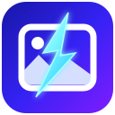

▦
A library that flows
Browse your photos in a clean, month-by-month grid. Smooth scrolling and flexible zoom make large collections feel approachable.

BoltGallery Get the app ↗A fast, thoughtful photo experience for Windows. Every memory in one flowing view — beautifully organised, easy to explore, and always yours.
Made for Windows 10 and 11 · Free to use
A fresh perspective
No complicated setup. No noisy interface. Just your photos, arranged in a way that feels natural — so you can spend less time managing files and more time reliving moments.
Move through your collection in a clean, month-grouped grid. Zoom in to see more detail or pull back for the big picture.
Thoughtfully powerful
Everything you need to rediscover your photos. Nothing you don't.
Browse your photos in a clean, month-by-month grid. Smooth scrolling and flexible zoom make large collections feel approachable.
Group photos by the people in them. Give a group a name and bring those memories together.
Explore photos with GPS metadata by place, with a simple dot-map and nearby-photo grouping.
Built to keep the interface responsive, load scaled thumbnails efficiently, and remember its index between launches.
BoltGallery is read-only: it never modifies or deletes your original photos. Face grouping and its data stay on your PC. Place names use OpenStreetMap lookup when internet is available.
Explore privacy details ↗A calmer kind of software
Technology should get out of the way and let the good stuff shine.
Meet BoltGallery ↗Privacy, without the mystery
BoltGallery scans and displays image files. It does not edit or delete your original photos.
Face detection and grouping run locally using your PC's GPU when supported, or CPU otherwise. Photos, face data and names stay on your PC.
The Locations feature may contact OpenStreetMap's Nominatim service to look up place names. Results are cached locally. GPS reading and grouping happen on your PC.
The library index, thumbnails, settings and feature data are stored in your Windows local application data folder.
This page describes the app behaviour documented in the project README. Please review it against the final release before publishing.
Read the full privacy policy ↗Good to know
A few quick answers before you make yourself at home.
Yes. BoltGallery is presented as a free app. There are no paid features advertised on this website.
BoltGallery is designed for Windows 10 and Windows 11. The app uses the .NET Framework 4.8 available on supported Windows installations.
The documented app workflow processes your photo library locally. The Locations feature can make a limited online request to OpenStreetMap to resolve place names; it does not upload photo pixels for that lookup.
Face grouping works locally after its model files have been downloaded once. GPS metadata is read locally; place names may show as coordinates when the app is offline or a name has not been looked up yet.
Some formats require Microsoft's free codec extensions from the Microsoft Store. If the required codec is not installed, those files may appear as unavailable tiles.
No. The app is designed to be read-only and does not modify or delete your original photo files.
Your next favourite little app
Bring your photo collection together with BoltGallery for Windows.
Get it from Microsoft Store ↗